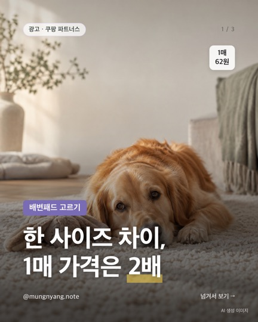
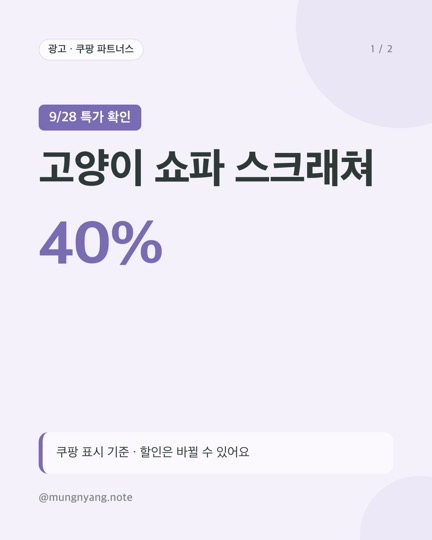
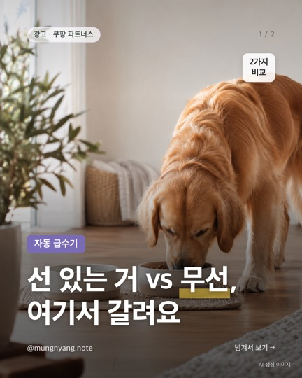
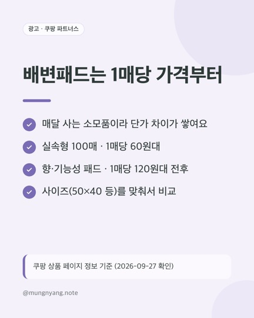

이 페이지는 쿠팡 파트너스 활동의 일환으로, 이에 따른 일정액의 수수료를 제공받습니다.
멍냥템 정리노트
@mungnyang.note · 반려동물 용품 (강아지·고양이 사료·모래·패드 등 소모품, 위생·산책·장난감)
번호는 Instagram 글에 적힌 번호와 같아요. 가격·재고는 쿠팡에서 다시 확인해 주세요.
🔥 요즘 특가 확인 시각 기준 · 할인은 바뀔 수 있어요

한 사이즈 차이, 1매 가격은 2배
- 얇다 27건
- 작다 12건
- 흡수 불만 8건
- → 소형견·자주 교체용
탐사 실속형 배변패드 50×40cm 100개입
쿠팡에서 가격·후기 보기 (광고)원문 글 보기
고양이 쇼파 스크래쳐
- 코멧 고양이 쇼파 스크래쳐, 오늘(9/28) 쿠팡 로켓배송 반려동물용품 할인 모음에 40% 할인 떠 있어요.
- · 타원형 1개: 9,490원 → 약 5,690원 (할인 모음)
- · 평판형 1개: 15,000원 → 약 8,860원 (상품 페이지)
- · 커브·타원·평판형, 모양마다 가격이 달라요
코멧 펫 고양이 쇼파 스크래쳐
쿠팡에서 가격·후기 보기 (광고)원문 글 보기전체 추천

선 있는 거 vs 무선, 여기서 갈려요
- 유선 2.4L · 2만 원대 · 필터 2개 포함
- 무선 3L · 5만 원대 · 내장배터리
- 무선: 자리 자유, 대신 충전 관리
- 유선: 충전 걱정 없음, 자리는 콘센트 근처
푸푸펫츠 반려동물 스마트 자동 급수기 3L
쿠팡에서 가격·후기 보기 (광고)원문 글 보기
배변패드는 1매당 가격부터
- 매달 사는 소모품이라 단가 차이가 쌓여요
- 실속형 100매 · 1매당 60원대
- 향·기능성 패드 · 1매당 120원대 전후
- 사이즈(50×40 등)를 맞춰서 비교
탐사 실속형 배변패드 50x40 100개입
쿠팡에서 가격·후기 보기 (광고)원문 글 보기